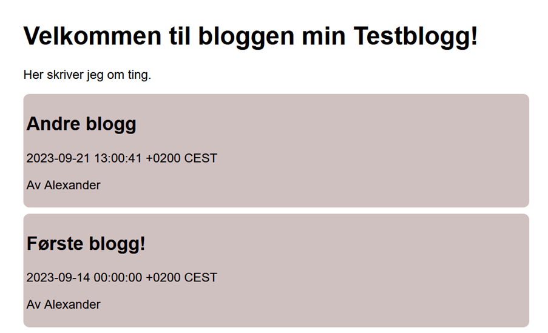

Alexander Johansen
Hvem er jeg? Jeg er en eller annen person som driver med datating som programmering, systemadministrasjon og selvfølgelig spill. Neida, spiller ikke like mye lenger. Utenom det liker jeg noen ganger å drive med 3D modellering med Blender (selv om jeg er ganske dårlig på det) og kanskje trene noen ganger.
Ting jeg har gjort

Blogg
CSS
Go
SQL
Dette prosjektet bruker SQL, Go og HTML og lar deg lage en blogg,
veldig enkelt. Kanskje bedre å bruke noe som WordPress eller Ghost, da.
Blogg
CSS
Go
SQL
Dette prosjektet bruker SQL, Go og HTML og lar deg lage en blogg,
veldig enkelt. Kanskje bedre å bruke noe som WordPress eller Ghost, da.
Ting jeg kan
CSS
Nybegynner
Mester
HTML
Nybegynner
Mester
JavaScript
Nybegynner
Mester
Photoshop
Nybegynner
Mester
Kvalifikasjoner
IT og medieproduksjon - Åssiden vgs.
Start
Fagbrev